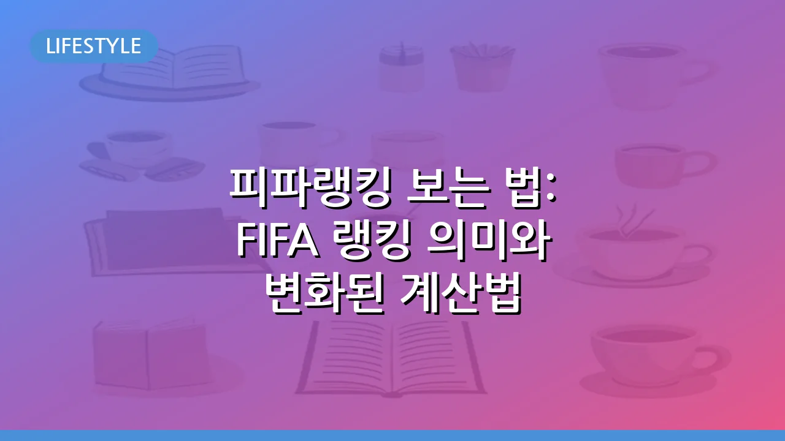

피파랭킹 보는 법: FIFA 랭킹 의미와 변화된 계산법
축구 팬이라면 누구나 자신의 응원팀 순위에 촉각을 곤두세웁니다. 바로 이 순위를 객관적으로 나타내는 지표가 피파랭킹(FIFA 랭킹)입니다. 피파랭킹은 각 국가대표팀의 현재 기량을 반영하며, 국제 대회 시드 배정 등에 결정적인 영향을 미칩니다. 특히 2018년에는 더욱 공정하고 역동적인 순위를 측정하기 위해 기존 방식에서 엘로 등급 시스템으로 계산법이 변경되었습니다. 이 글에서는 최신 피파랭킹을 확인하는 방법부터 그 중요성, 그리고 변화된 계산법의 핵심 원리까지 자세히 알아보겠습니다.
피파랭킹(FIFA 랭킹)이란 무엇인가요?
피파랭킹은 국제축구연맹(FIFA)이 전 세계 남자 축구 국가대표팀의 상대적인 강도를 평가하여 순위를 매기는 시스템입니다. 이는 각 팀의 경기 결과와 상대팀의 수준, 그리고 경기의 중요도 등을 종합적으로 반영하여 점수를 부여하고, 이 점수를 기준으로 모든 국가대표팀의 순위를 결정합니다. 피파랭킹의 주된 목적은 국제 축구계에서 팀 간의 객관적인 비교 기준을 제공하고, FIFA 주관 대회(예: FIFA 월드컵)의 조 추첨 시 시드 배정을 위한 기준으로 활용되는 것입니다.
최신 피파랭킹 확인 방법
최신 피파랭킹은 주로 FIFA 공식 웹사이트를 통해 가장 정확하게 확인할 수 있습니다. FIFA는 일반적으로 매달 새로운 랭킹을 업데이트하여 발표하며, 전 세계 스포츠 언론과 뉴스 매체에서도 이 정보를 실시간으로 보도합니다. 검색 엔진에 'FIFA 랭킹' 또는 '피파랭킹'을 검색하거나, 즐겨 찾는 스포츠 뉴스 사이트에 접속하면 쉽게 최신 순위를 찾아볼 수 있습니다. 각 팀의 총점과 순위 변동, 그리고 상세한 경기 결과까지도 함께 제공되는 경우가 많으므로, 이를 통해 관심 있는 팀의 현황을 파악할 수 있습니다.
피파랭킹의 중요성과 활용
피파랭킹은 단순한 순위 그 이상의 의미를 가집니다. 국제 축구계에서 피파랭킹의 중요성은 다음과 같습니다.
- 주요 국제 대회 시드 배정: FIFA 월드컵, 각 대륙별 챔피언십 등 권위 있는 국제 대회의 조 추첨 시 상위 랭킹 팀들이 유리한 시드를 배정받습니다. 이는 토너먼트 초반에 강팀들과의 대결을 피하고 비교적 쉬운 조에 편성될 기회를 얻는다는 의미입니다.
- 대륙별 예선 방식 결정: 일부 지역의 월드컵 예선이나 대륙별 컵 대회 예선에서는 피파랭킹을 기준으로 팀을 나눠 토너먼트 대진을 구성하기도 합니다.
- 국가대표팀 전략 수립: 각국 축구협회는 랭킹 향상을 위해 친선 경기 상대 선정, 전술 개발 등에 랭킹을 참고합니다. 높은 랭킹은 스폰서 유치와 대외 이미지 제고에도 긍정적인 영향을 미칩니다.
FIFA 랭킹 계산법: 2018년 변경된 엘로 등급 시스템
FIFA는 2018년 러시아 월드컵 이후 기존 랭킹 시스템의 단점(예: 경기 중요도 반영 미흡, 특정 시기 점수 인플레이션 등)을 보완하기 위해 엘로 등급 시스템(Elo Rating System)을 기반으로 한 새로운 계산법을 도입했습니다. 엘로 등급 시스템은 원래 체스 등에서 선수들의 상대적 기량을 평가하는 데 사용되던 방식으로, 두 팀 간의 경기 결과를 통해 각 팀의 점수를 주고받는 방식으로 작동합니다.
기본 원리는 다음과 같습니다:
- 승리 시 점수 획득, 패배 시 점수 상실: 경기의 승패에 따라 점수가 증감합니다.
- 상대팀 랭킹에 따른 점수 변동: 랭킹이 높은 팀을 이기면 더 많은 점수를 얻고, 랭킹이 낮은 팀에 지면 더 많은 점수를 잃습니다. 반대로 랭킹이 낮은 팀을 이겨도 얻는 점수는 적습니다.
- 경기 중요도 반영: 월드컵 본선, 대륙별 챔피언십 본선 등 중요한 경기는 더 큰 계수(가중치)가 적용되어 점수 변동 폭이 커집니다. 친선 경기는 계수가 가장 낮습니다.
이러한 변경으로 인해 랭킹은 더욱 역동적으로 변하고, 각 팀의 현재 경기력을 보다 정확하게 반영하게 되었습니다.
엘로 등급 시스템 주요 변수와 이해
엘로 등급 시스템은 단순히 이기고 지는 것을 넘어, 여러 변수를 고려하여 점수를 계산합니다. 주요 변수는 다음과 같습니다.
- 경기 결과 (P): 승리 시 +3점, 무승부 시 +1점, 패배 시 +0점으로 기본 점수가 부여됩니다. 승부차기 승리는 무승부와 유사하게 처리됩니다.
- 경기 중요도 계수 (I): 각 경기의 중요도에 따라 랭킹 점수 계산에 적용되는 가중치입니다. 예를 들어 월드컵 본선 경기는 높은 계수를, 친선 경기는 낮은 계수를 가집니다. 일반적으로 중요도가 높은 순서대로 월드컵 본선 > 대륙컵 본선/월드컵 예선 > 친선 경기 등으로 나눌 수 있습니다.
- 예상 경기 결과 (We): 두 팀의 현재 랭킹 차이를 기반으로 계산되는 예상 승리 확률입니다. 랭킹 차이가 클수록 강팀의 예상 승률이 높게 책정됩니다.
실제 획득/상실 점수는 P - We 값에 I를 곱하는 방식으로 계산되며, 여기에 랭킹 변화를 조절하는 상수 K값이 더해지는 등 복잡한 수식이 적용됩니다. 이 시스템 덕분에 랭킹이 낮은 팀이 강팀을 꺾었을 때 얻는 점수가 훨씬 커져, 이변이 랭킹에 더욱 드라마틱하게 반영됩니다.
피파랭킹, 더 공정하고 흥미로운 축구의 지표
엘로 등급 시스템의 도입은 피파랭킹의 신뢰도를 한층 높였다는 평가를 받습니다. 과거에는 친선 경기에서의 승패가 랭킹에 미치는 영향이 과도하거나, 특정 팀의 랭킹이 실제 기량보다 높게 유지되는 경향이 있었습니다. 하지만 변경된 계산법은 최근 경기력과 상대팀의 강도를 더욱 세밀하게 반영하여, 랭킹이 곧 팀의 현재 위치를 보다 공정하게 보여주는 지표가 되었습니다.
축구 팬들에게 피파랭킹은 국가대표팀의 위상을 가늠하는 중요한 기준이자, 앞으로의 국제 대회 결과를 예측하고 경기를 더욱 흥미롭게 즐길 수 있는 관전 포인트가 됩니다. 최신 랭킹 변화를 주시하며 다가오는 월드컵과 국제 대회를 더욱 재미있게 즐겨보시길 바랍니다.
🔗 이 글도 함께 보면 좋아요: 배우 윤세아 프로필, 주요 출연작, 나이 및 최신 활동 정보
관련 추천 상품
이 포스팅은 쿠팡 파트너스 활동의 일환으로, 이에 따른 일정액의 수수료를 제공받습니다.